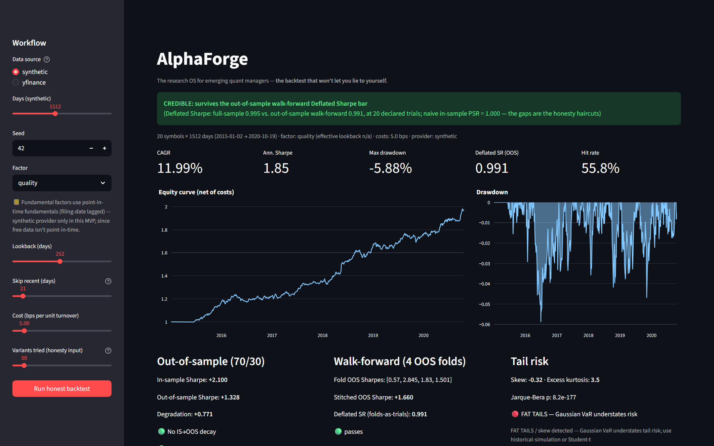
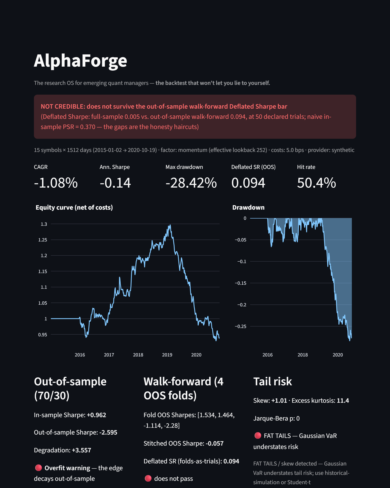
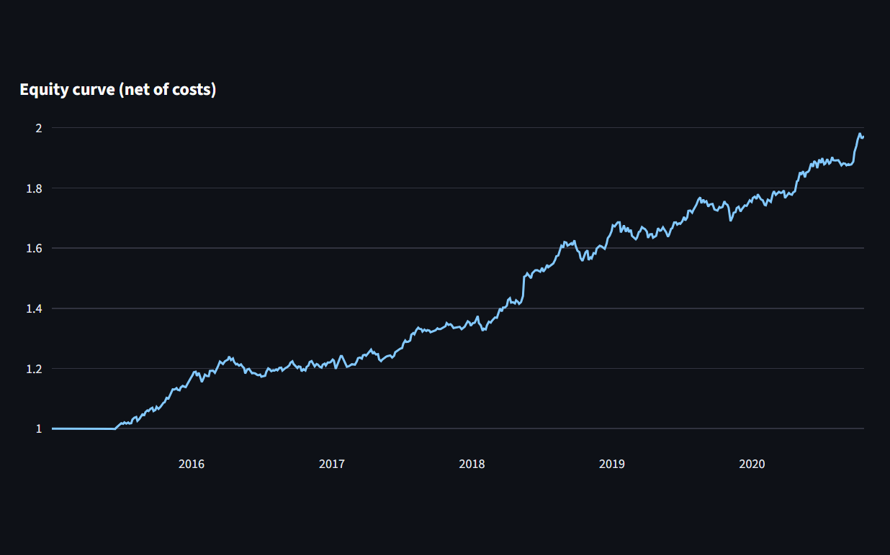
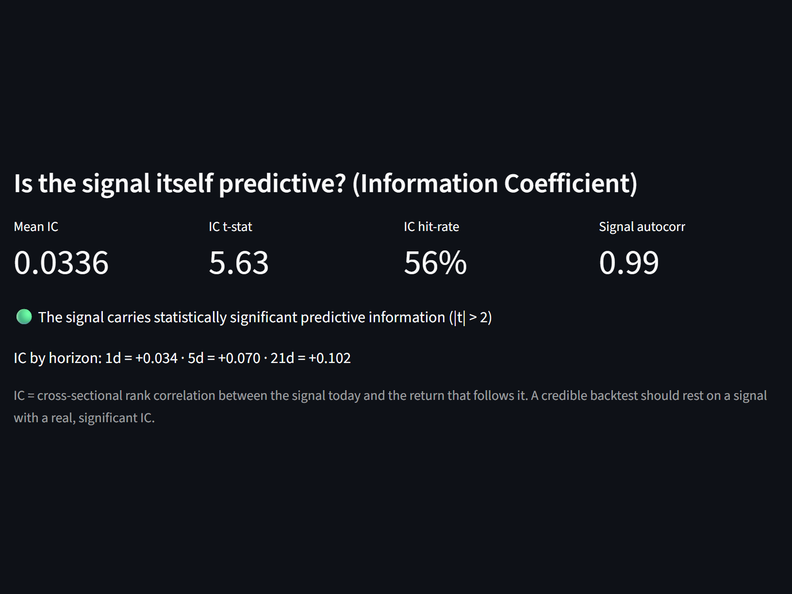

Backtest, stress-test, and validate strategies with deflated Sharpe, overfitting probability, and point-in-time data — on every run.
point-in-time data·deterministic seeds·costs on every trade
Research software, not investment advice.

Every run ends in a judgment — with the methodology that produced it.



Your backtest is probably lying to you — not because you're careless, but because the standard workflow is built to flatter. Three biases do most of the damage:
Try fifty variations, keep the best — that's luck wearing a lab coat. AlphaForge deflates every Sharpe by the number of trials you declare.
Information leaks backwards; dead tickers vanish. Point-in-time data and a truncation-proof guarantee the past never moves.
A 97% "significant" result can be noise once you account for the search. Walk-forward and out-of-sample verdicts run by default.
Anchored folds, stitched out-of-sample records, and a verdict that treats every fold as one of your trials. In-sample brilliance that dies out-of-sample gets flagged — loudly, every time.
Filings, transcripts, and news become bounded, source-cited numbers that drop straight into the same honest backtest. Every signal carries its information coefficient — so a lucky curve on a meaningless signal can't sneak through.
Shareable research tearsheets with the methodology footnoted on the page. The footnotes are the feature — what you send is what was actually tested.
*Every figure verifiable in the public test suite — read the methodology.
Same inputs, same outputs. Every run reproduces exactly.
A value exists only from the date it was knowable.
Deflated Sharpe, PBO, and IC — documented, not proprietary mystery.
Every verdict traceable to code, data, and declared trials.
Research software, not investment advice.